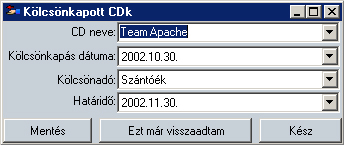

CD kölcsönkapása
Alapértelmezett
ikonja: |
 |
| Pillanatkép: |
 |
Itt lehet nyilvántartani az általad kölcsönkapott CDket. Azoknak is a neveit, a kölcsönkapásuk
dátumát, a tulajdonosaikat (a kölcsönadókat), valamint a visszavitel határidejét. A kölcsönadót
az általad korábban bevitt kölcsönkérõkbõl kell kiválasztani, valamint a határidõ alapbeállítása
is az általad beállított türelmi idõvel számítódik.